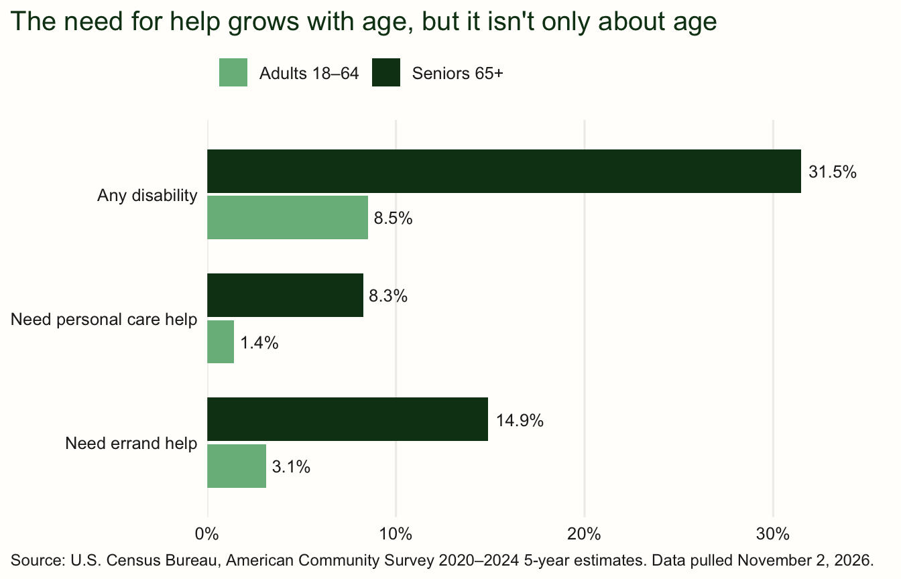
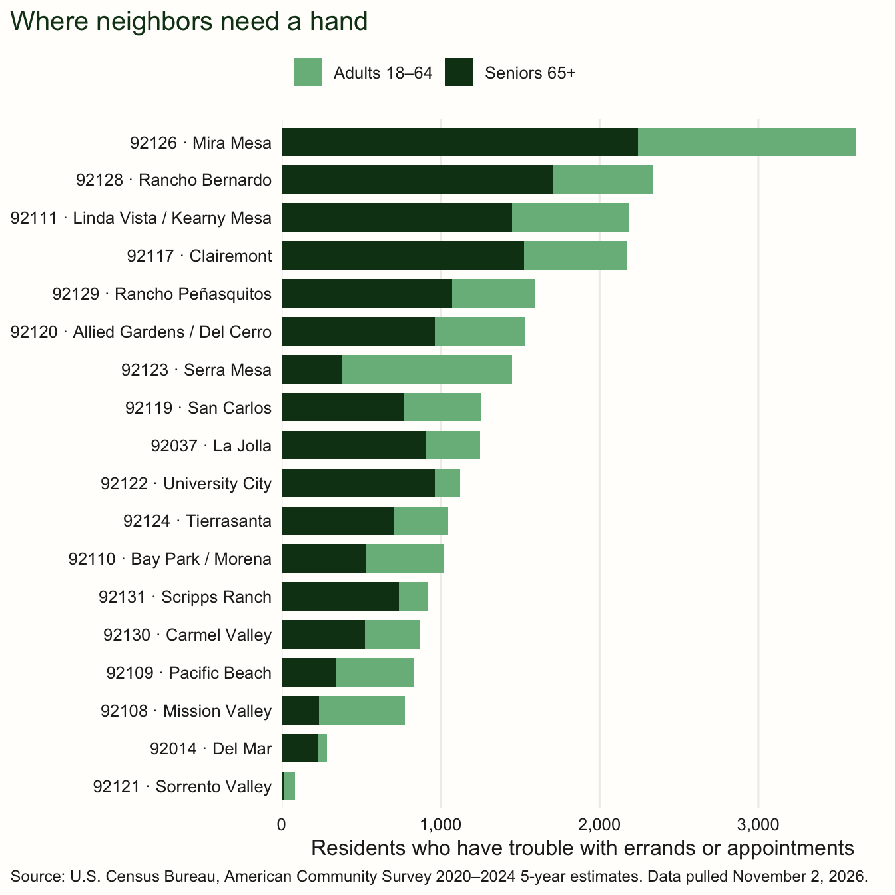
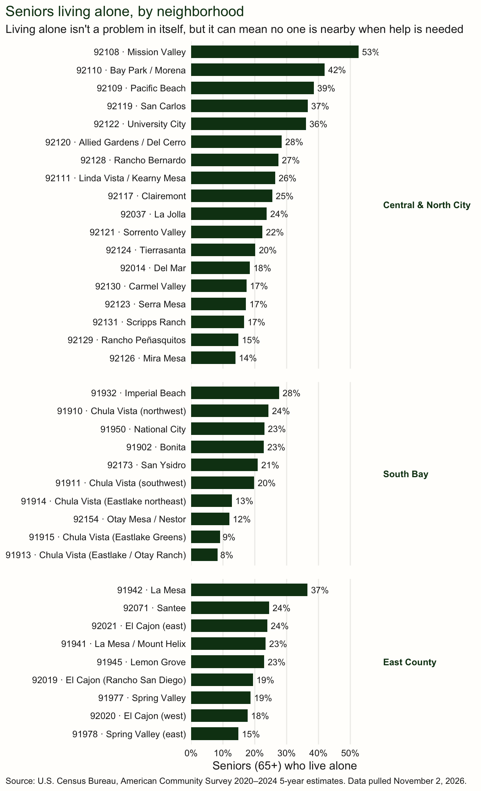

What Census data tells us about seniors and younger adults living with a disability, from La Jolla to Rancho Bernardo.
Research
Seniors
Disability
San Diego
A look at Census data on seniors and younger adults who need help with daily life, across the neighborhoods around University City, San Diego.
Author
Karl Marquez
Published
November 2, 2026
When we started Marquez Family Home Care, we wanted to understand our neighbors before we knocked on a single door. Who in our community needs help at home, and what kind of help? We went to the U.S. Census Bureau’s American Community Survey for answers.
We looked at two groups we care for:
Seniors (65 and older) who want to stay safe and comfortable in the home they know.
Younger adults (18 to 64) living with a disability, including people with developmental disabilities and people recovering from a brain or spinal cord injury.
The Census doesn’t ask whether someone “needs a caregiver.” It asks about specific difficulties, and two of them line up closely with non-medical home care:
Census question
What it means day to day
How a caregiver helps
Self-care difficulty
Trouble bathing or dressing
Personal care, done with dignity
Independent-living difficulty
Trouble running errands or getting to appointments alone
library(tidyverse)library(tidycensus)library(scales)library(knitr)# ACS 5-year vintage. 2024 = the 2020–2024 survey. Drop to 2023 if load_variables() errors.acs_year <-2024# Neighborhoods within a reasonable drive of our home base in 92122 (ZIP code tabulation areas)service_area <-tribble(~zcta, ~area,"92122", "University City","92037", "La Jolla","92117", "Clairemont","92111", "Linda Vista / Kearny Mesa","92123", "Serra Mesa","92124", "Tierrasanta","92126", "Mira Mesa","92121", "Sorrento Valley","92130", "Carmel Valley","92129", "Rancho Peñasquitos","92131", "Scripps Ranch","92109", "Pacific Beach","92110", "Bay Park / Morena","92108", "Mission Valley","92120", "Allied Gardens / Del Cerro","92119", "San Carlos","92128", "Rancho Bernardo","92014", "Del Mar")service_zips <- service_area$zctaif (Sys.getenv("CENSUS_API_KEY") =="") {stop("No Census API key found. Run tidycensus::census_api_key('YOUR_KEY', install = TRUE) and restart R.")}# Brand colors for chartsbrand <-list(forest ="#0f3e17",petal ="#79b88b",burgundy ="#7a1f3d",cream ="#fffefc",charcoal ="#222222",mist ="#efeeeb")band_labels <-c(u18 ="Under 18", a18_64 ="Adults 18–64", s65 ="Seniors 65+")band_colors <-c("Adults 18–64"= brand$petal, "Seniors 65+"= brand$forest)measure_labels <-c(any ="Any disability",selfcare ="Self-care difficulty\n(bathing, dressing)",indliving ="Independent-living difficulty\n(errands, appointments)")theme_marquez <-function(base_size =12) {theme_minimal(base_size = base_size) +theme(text =element_text(color = brand$charcoal),plot.title =element_text(color = brand$forest, size = base_size +3),plot.title.position ="plot",plot.subtitle =element_text(color = brand$charcoal),plot.caption =element_text(color = brand$charcoal, size = base_size -3, hjust =0),plot.caption.position ="plot",axis.text =element_text(color = brand$charcoal),panel.grid.minor =element_blank(),panel.grid.major.y =element_blank(),panel.grid.major.x =element_line(color = brand$mist),legend.position ="top",legend.justification ="left",plot.background =element_rect(fill = brand$cream, color =NA),panel.background =element_rect(fill = brand$cream, color =NA) )}
Show the R code
acs_vars <-load_variables(acs_year, "acs5", cache =TRUE) |>select(name, label) |>mutate(label =str_remove_all(label, ":"))acs_pull <-function(level =c("county", "zcta"), table =NULL, variables =NULL) { level <-match.arg(level) args <-list(year = acs_year, survey ="acs5")if (!is.null(table)) args$table <- tableif (!is.null(variables)) args$variables <- variables args <-if (level =="county") {c(args, geography ="county", state ="CA", county ="San Diego") } else {c(args, list(geography ="zcta", zcta = service_zips)) } out <-do.call(get_acs, args)if (!is.null(table)) out <-left_join(out, acs_vars, by =c("variable"="name")) out}last_part <-function(label) word(label, -1, sep ="!!")age_band <-function(age) {case_when( age %in%c("Under 18 years", "5 to 17 years") ~"u18", age %in%c("18 to 34 years", "35 to 64 years", "18 to 64 years") ~"a18_64", age %in%c("65 to 74 years", "75 years and over", "65 years and over") ~"s65",TRUE~NA_character_ )}# Population by age (B01001)age_counts <-function(level) {acs_pull(level, table ="B01001") |>filter(str_count(label, "!!") ==3) |>mutate(age_txt =last_part(label),age_lo =if_else(str_detect(age_txt, "^Under"), 0,as.numeric(str_extract(age_txt, "\\d+"))) ) |>group_by(GEOID, NAME) |>summarise(pop_total =sum(estimate),pop_18_64 =sum(estimate[age_lo >=18& age_lo <65]),pop_65 =sum(estimate[age_lo >=65]),pop_75 =sum(estimate[age_lo >=75]),pop_85 =sum(estimate[age_lo >=85]),.groups ="drop" )}# Disability / difficulty status by age band (C18108, B18106, B18107), parsed by labelstatus_by_age <-function(level, table, leaf_pattern, without_pattern) {acs_pull(level, table = table) |>filter(str_detect(last_part(label), leaf_pattern)) |>mutate(age =str_extract(label, "Under 18 years|\\d+ to \\d+ years|\\d+ years and over"),band =age_band(age),has =!str_detect(last_part(label), without_pattern) ) |>filter(!is.na(band)) |>group_by(GEOID, band) |>summarise(with =sum(estimate[has]),with_moe =moe_sum(moe[has], estimate[has]),universe =sum(estimate),.groups ="drop" ) |>mutate(pct = with / universe)}status_long <-function(level) {bind_rows(any =status_by_age(level, "C18108", "disability", "^No disability"),selfcare =status_by_age(level, "B18106", "difficulty", "^No "),indliving =status_by_age(level, "B18107", "difficulty", "^No "),.id ="measure" )}status_wide <-function(long) { long |>select(GEOID, measure, band, with, pct) |>pivot_wider(names_from =c(measure, band), values_from =c(with, pct),names_glue ="{measure}_{band}_{.value}")}# Seniors living alone (B09020)living_alone <-function(level) {acs_pull(level, table ="B09020") |>group_by(GEOID) |>summarise(pop65_universe = estimate[variable =="B09020_001"],alone_65 =sum(estimate[str_detect(label, regex("living alone$", ignore_case =TRUE))]),.groups ="drop" ) |>mutate(pct_alone_65 = alone_65 / pop65_universe)}# Spanish spoken at home among people 65+ (B16004)spanish_65 <-function(level) {acs_pull(level, table ="B16004") |>group_by(GEOID) |>summarise(pop65_lang =sum(estimate[str_detect(label, "!!65 years and over$")]),spanish_65 =sum(estimate[str_detect(label, "65 years and over!!Speak Spanish$")]),.groups ="drop" ) |>mutate(pct_spanish_65 = spanish_65 / pop65_lang)}build_profile <-function(level) { long <-status_long(level) wide <-list(age_counts(level), status_wide(long), living_alone(level), spanish_65(level)) |>reduce(left_join, by ="GEOID")list(wide = wide, long = long)}
Show the R code
county_raw <-build_profile("county")zip_raw <-build_profile("zcta")county <- county_raw$widecounty_long <- county_raw$longzips <- zip_raw$wide |>left_join(service_area, by =c("GEOID"="zcta"))zip_long <- zip_raw$long |>left_join(service_area, by =c("GEOID"="zcta"))# When the numbers were pulled from the Census API (kept with the frozen results)data_pulled <-Sys.Date()pulled_label <-sprintf("%s %d, %s", format(data_pulled, "%B"),as.integer(format(data_pulled, "%d")), format(data_pulled, "%Y"))acs_label <-paste0("American Community Survey ", acs_year -4, "–", acs_year, " 5-year estimates")source_caption <-paste0("Source: U.S. Census Bureau, ", acs_label, ". Data pulled ", pulled_label, ".")
San Diego County at a glance
507,734residents aged 65 and older
59,830residents aged 85 and older
136,323adults who have difficulty running errands or getting to appointments alone
122,505seniors who live alone
Source: U.S. Census Bureau, American Community Survey 2020–2024 5-year estimates. Data pulled from the Census on November 2, 2026.
Show the R code
tribble(~``, ~`Adults 18–64`, ~`Seniors 65+`,"People in the county",comma(county$pop_18_64), comma(county$pop_65),"Living with any disability",comma(county$any_a18_64_with), comma(county$any_s65_with),"Difficulty bathing or dressing",comma(county$selfcare_a18_64_with), comma(county$selfcare_s65_with),"Difficulty with errands or appointments alone",comma(county$indliving_a18_64_with), comma(county$indliving_s65_with)) |>kable(caption =paste0("San Diego County, ", acs_label, ". Data pulled ", pulled_label, "."))
San Diego County, American Community Survey 2020–2024 5-year estimates. Data pulled November 2, 2026.
Adults 18–64
Seniors 65+
People in the county
2,093,723
507,734
Living with any disability
169,980
157,192
Difficulty bathing or dressing
28,185
41,237
Difficulty with errands or appointments alone
61,986
74,337
Show the R code
county_long |>filter(band %in%c("a18_64", "s65")) |>mutate(measure =factor(measure_labels[measure], levels =rev(measure_labels)),band = band_labels[band]) |>ggplot(aes(x = pct, y = measure, fill = band)) +geom_col(position =position_dodge(width =0.75), width =0.7) +geom_text(aes(label =percent(pct, 0.1)),position =position_dodge(width =0.75), hjust =-0.15, size =3.4,color = brand$charcoal) +scale_x_continuous(labels = percent, expand =expansion(mult =c(0, 0.15))) +scale_fill_manual(values = band_colors) +labs(x =NULL, y =NULL, fill =NULL,title ="The need for help grows with age, but it isn't only about age") +labs(caption = source_caption) +theme_marquez()

Seniors are several times more likely than younger adults to need help with daily tasks. But because there are so many more adults under 65, younger adults with a disability are a large share of the people who need a hand at home. Home care isn’t only for grandparents.
Often the hardest part of needing help is the everyday: getting to the doctor, a hot meal, a ride to the store. Those are the moments we’re here for.
Neighborhood by neighborhood
Here’s the same picture for the communities closest to our home base in University City, ranked by how many adults have difficulty running errands or getting to appointments on their own.
zip_long |>filter(measure =="indliving", band %in%c("a18_64", "s65")) |>mutate(zip_label =paste(GEOID, area, sep =" · "),band = band_labels[band]) |>ggplot(aes(x = with, y =fct_reorder(zip_label, with, .fun = sum), fill = band)) +geom_col(width =0.75) +scale_x_continuous(labels = comma, expand =expansion(mult =c(0, 0.05))) +scale_fill_manual(values = band_colors) +labs(x ="Residents who have trouble with errands or appointments",y =NULL, fill =NULL,title ="Where neighbors need a hand") +labs(caption = source_caption) +theme_marquez()

Show the R code
zip_rank |>mutate(zip_label =paste(GEOID, area, sep =" · ")) |>ggplot(aes(x = pct_alone_65, y =fct_reorder(zip_label, pct_alone_65))) +geom_col(fill = brand$forest, width =0.7) +geom_text(aes(label =percent(pct_alone_65, 1)), hjust =-0.2, size =3.3,color = brand$charcoal) +scale_x_continuous(labels = percent, expand =expansion(mult =c(0, 0.12))) +labs(x ="Seniors (65+) who live alone", y =NULL,title ="Seniors living alone, by neighborhood",subtitle ="Living alone isn't a problem in itself, but it can mean no one is nearby when help is needed") +labs(caption = source_caption) +theme_marquez()

What this means for families
Many families in our area are caring for someone right now, often while working full time. A few things stood out to us:
Help with everyday tasks is the most common need. More people have trouble with errands and appointments than with bathing or dressing. Companionship, rides and meals matter.
Younger adults need support too. Developmental disabilities and injuries from accidents affect people at every age. The San Diego Regional Center alone serves about 41,350 people with developmental disabilities across San Diego and Imperial counties.
Language matters. In some San Diego neighborhoods, a large share of seniors speak Spanish at home. A caregiver who speaks your loved one’s language makes care feel like home.
Why we’re building this
We didn’t start Marquez Family Home Care to compete with the agencies already caring for San Diego families. We started it because the need keeps growing. Every year, more of our neighbors reach the age when everyday tasks get harder, and more younger adults are living with a disability or recovering from an injury. Many families are already stretched thin.
Our goal is to help fill that gap, alongside everyone else doing this work, so that more people can stay safe, comfortable and independent in the homes they love.
Wondering whether your loved one could use some help?
We’re happy to talk it through, with no pressure and no obligation. Marquez Family Home Care provides non-medical support: personal care, companionship, meals, errands and respite for family caregivers.
Data pulled: November 2, 2026, from the Census Bureau API.
Source: U.S. Census Bureau, American Community Survey 2020–2024 5-year estimates (tables B01001, B18106, B18107, C18108, B09020, B16004), pulled with the tidycensus R package. Regional Center figure: San Diego Regional Center FY 2023–24 Performance Report, CA Department of Developmental Services.
People living in nursing homes aren’t included, which suits our purpose: these are people living in their own homes.
Neighborhood numbers are estimates with real margins of error, especially in smaller ZIP codes. Treat the ranking as a general picture, not an exact count.
The measures overlap. Someone with difficulty bathing often also has difficulty with errands, so the rows shouldn’t be added together.
ZIP areas are approximate. The Census uses “ZIP code tabulation areas,” which closely match, but don’t exactly equal, postal ZIP codes.